PSF model: Rotated elliptical Gaussian function (3D using astigmatism)
3D SMLM imaging can be performed by introducing a weak cylindrical lens into the imaging path to create slight astigmatism in the image [1]. This results in images of molecules with different ellipticity depending on their axial position. When a molecule is in focus, its image appears round. If the molecule is slightly above or below the focal plane, its image appears ellipsoidal. Calibration of the imaging system is needed to determine the orientation of the imaged ellipsoid (the camera chip might not be aligned with cylindrical lens) and the relationships between the axial position and ellipticity of the imaged molecules.
A common PSF model for astigmatic 3D imaging is a rotated, elliptical Gaussian function given by the formula
| 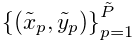 |
where 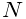
gives the expected photon count at the integer pixel position  for the parameters
for the parameters  ,
and
,
and
| 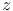 | 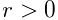 | |||
| 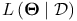 | 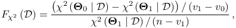 |
The entries of the vector  are as follows: 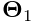
are the sub-pixel molecular coordinates, 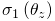
and 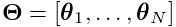 are the imaged widths of
the molecule along two perpendicular axes rotated by the angle
are as follows: 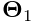
are the sub-pixel molecular coordinates, 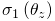
and 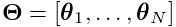 are the imaged widths of
the molecule along two perpendicular axes rotated by the angle  with respect to 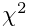 coordinates,
with respect to 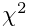 coordinates,  corresponds to the
total number of photons emitted by the molecule, and
corresponds to the
total number of photons emitted by the molecule, and  is the background offset. The imaged widths
and are modeled by a pair of
defocusing curves.
is the background offset. The imaged widths
and are modeled by a pair of
defocusing curves.
References
- [1] (2008) Three-dimensional super-resolution imaging by stochastic optical reconstruction microscopy. Science 319 (5864), pp. 810–3. External Links: Document Cited by: PSF model: Rotated elliptical Gaussian function (3D using astigmatism).
![[LOGO]]()